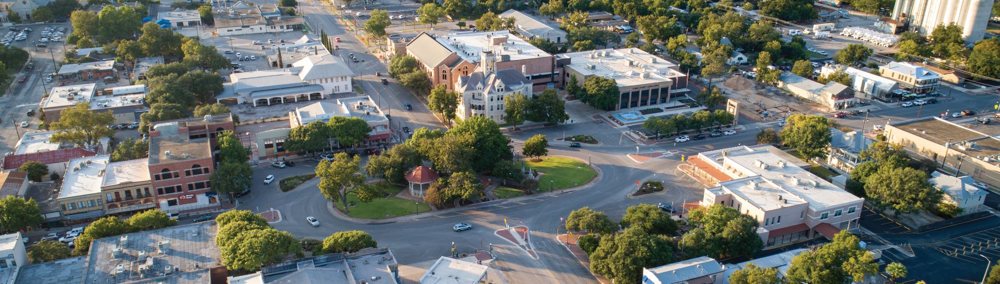

Welcome to New Braunfels, Texas
New Braunfels is a beautiful Texas town filled with German heritage, family attractions, and crystal-clear rivers. Founded in 1845 by German settlers, it still proudly showcases its European charm through local architecture, festivals, food, and community traditions.
Visitors come from all over the country to experience the Comal and Guadalupe Rivers, hike along the scenic hill country, and explore historic Gruene—home of Texas’ oldest dance hall. Whether you're tubing, shopping, or enjoying live music, New Braunfels offers something fun year-round.
This website will help you explore the most iconic spots in New Braunfels, learn about activities, and plan your next visit with ease. Use the menu above to navigate through the highlights that make this town special.